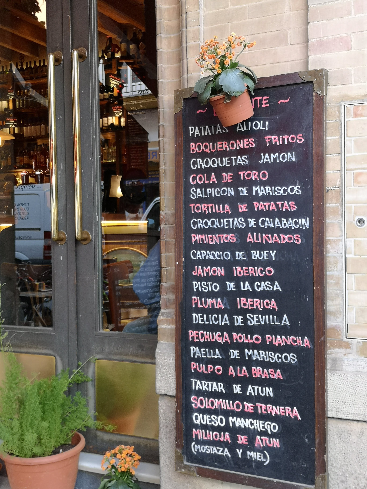
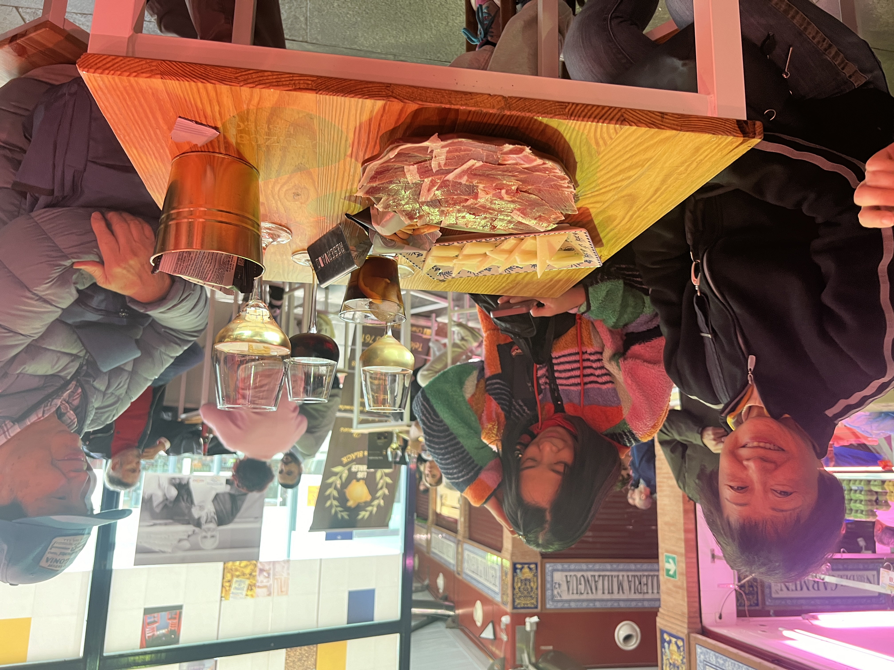

Tailor Made · Food & Wine
Food & Wine
Food & Wine

Food & Wine Tours
Seville as the capital in the Southern Spain, a magical city representing all the Spanish traditions where legends come to life and each of our narrow streets are full of mysteries, history, and hidden gems.
I would say that Seville is considered the most “Spanish” city in all Spain. It is here you find the purest flamenco, the colorful tiles are at present in every cooling patio and in many stunning buildings. And the tapas of course, In Seville you find most tapas bars per inhabitant.
The local gastronomy in Seville is the true reflection of both the traditions and the history in many ways. And of course the flavors that represent its local food tell us much about the past as well as the present of the region. This is exactly what Seville Food & Wine Tours are focusing on in every tour and experience we offer.
To be real and authentic, to select the charm and closeness that local producers express through their high quality products.
Seville Food & Wine tours reaches out to those looking for true experiences with a touch of Luxury. We arrange day tours in Seville as authentic food adventures. Bus also visits the surroundings of Seville in the Cadiz and Huelva region where you meet local food producers laboring high quality culinary products with the essence of tradition and innovation.
Our inspiration also reaches out to Food & Wine enthusiasts searching for food experiences outside of Andalucia, in the most acknowledged wine regions in Spain. Experiences cava.


Flavor andalucia Experience
The Andalusian gastronomy has long traditions and cultural roots from all the civilisations that have occupied these lands. That is what makes it so unique and flavorful.
Every tiny village still holds on to its habits and culinary heritage and passes it over to the next generations. The diversity of delicious dishes reflects the variety of climate and landscape. From the best seafood and amazing fish dishes along the Mediterranean sea and Atlantic ocean to the world famous Spanish Iberian ham in the inland of Granada and Huelva.
The refreshing Gazpacho and Salmorejo is alway a top hit in the warm summer nights in Seville and Granada. Seville Food & Wine Tours always makes the perfect selection when we with elegance and luxury assemble our Food Experiences for you.



“A table in Andalucía is never only about the food.”
You can trust us
What they say about us
Gunvor was a fabulous guide on our food tour! She was very easy to understand and very accommodating. She took us to great local places and gave great explanations of all the food we sampled. A joy to be with! We would use her again in a minute!!
We had a great tapas tour with Gunvor, she showed us some really nice tapas bars and told us about Seville and its history and local recipes. I highly recommend it.
Our Tapas tour was amazing. Gunvor showed us some really great places and we had lost of tapas.
We loved our tour with Gunvor! She showed us really interesting places to see within easy reach on foot but not on the main tourist trail and we had a chance to try a great range of tasty food.
Tailor made
Let us assemble your food experience
Tell us how long you have in Seville and what you like to eat and drink.